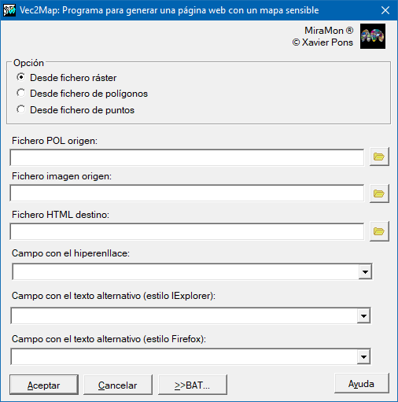

-
 Vec2Map: Crear un mapa HTML
Vec2Map: Crear un mapa HTML
Vec2Map: Crear un mapa HTML| Presentación y opciones | Caja de diálogo de la aplicación |
| Sintaxis |
La opción 1, desde fichero ráster, tiene como objetivo aprovechar las funciones de digitalización de MiraMon para definir las regiones activas dentro de una imagen incluida en una página HTML. Primero, es necesario disponer de la imagen ráster GIF o JPG en la que se quieren definir regiones activas. Esta imagen puede ser una captura de pantalla en MiraMon de un mapa reducido. Para obtenerla, de visualizarse el mapa con MiraMon, definir el tamaño deseado a partir del nivel de zoom y del tamaño de la ventana de la aplicación, capturar la pantalla de MiraMon con las teclas Alt+Impr.Pant. y pegarla en un programa de tratamiento de imágenes como Corel Photopaint o Adobe Photoshop. Alternativamente, se puede generar la imagen desde el módulo de impresión de MiraMon imprimiendo directamente sobre un JPEG. Para imágenes temáticas se recomienda guardarla en formato GIF y para imágenes continuas en formato JPG. También será necesario guardar una versión en formato BMP o JPEG para poder abrirla en MiraMon. Debe anotarse el número de filas y columnas de la imagen ráster.
El fichero impreso en MiraMon debe abrirse con la opción "Abrir ráster" y digitalizar las áreas activas deseadas en un fichero VEC de polígonos con atributos string. Como atributo de cada área activa, debe indicarse el texto del enlace HTML separado por una coma del descriptor del enlace. Este descriptor será visible en algunos navegadores al pasar el puntero del ratón sobre el área activa.
Una vez finalizado el fichero VEC debe utilizarse esta aplicación para generar la página web. Debe editarse el fichero HTML con el programa habitual de generación de código HTML y añadir el resto de contenidos deseados.
La opción 2, desde fichero de polígonos, permite trabajar con un vector estructurado de polígonos .pol, directamente en coordenadas de terreno (no es necesario que el fichero esté digitalizado sobre la imagen impresa en coordenadas de píxel, como en el caso de la opción 1). En este caso, es necesario disponer de un fichero JPEG con un número de filas y columnas lo bastante pequeño como para mostrarse en HTML, el cual debe estar georreferenciado. La aplicación de impresión de MiraMon produce ficheros JPEG georreferenciados de baja resolución si se indica un número de filas y columnas pequeño. Hay que tener en cuenta que es posible superponer áreas sensibles. Para hacerlo, primero se generan las áreas sensibles mayores y posteriormente las menores en ficheros de salida diferentes.
La opción 3, desde fichero de puntos, permite generar un mapa HTML sensible a partir de un vector estructurado de puntos .pnt. Las áreas sensibles serán de forma rectangular, con la altura y anchura deseadas, pasando estos valores en los parámetros de ejecución Altura y Anchura. En este caso, como en la opción 2, es posible trabajar con un fichero PNT directamente en coordenadas de terreno si el fichero JPEG es de baja resolución y está georreferenciado. El parámetro Orientación establece dónde se dibujan estos rectángulos respecto a cada punto.

 |
| Caja de diálogo de Vec2Map |